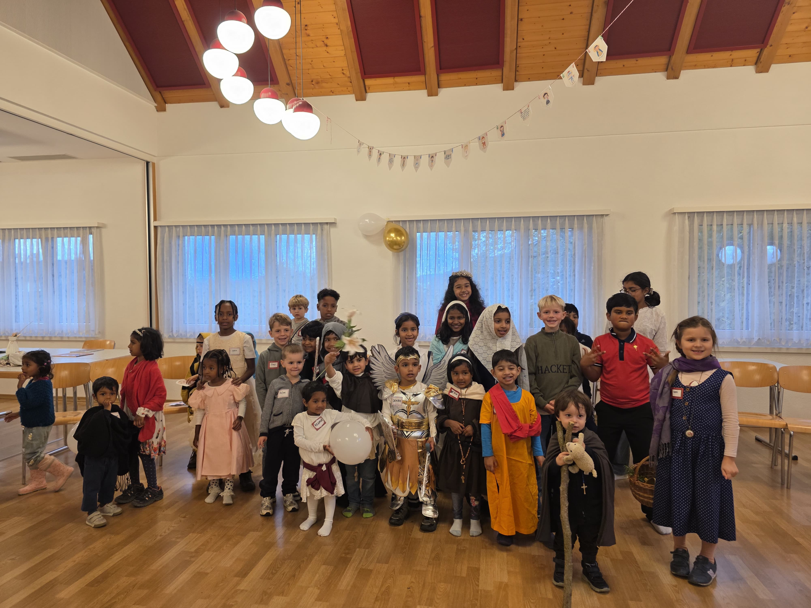
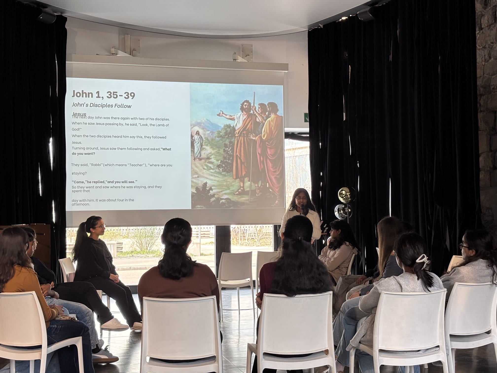
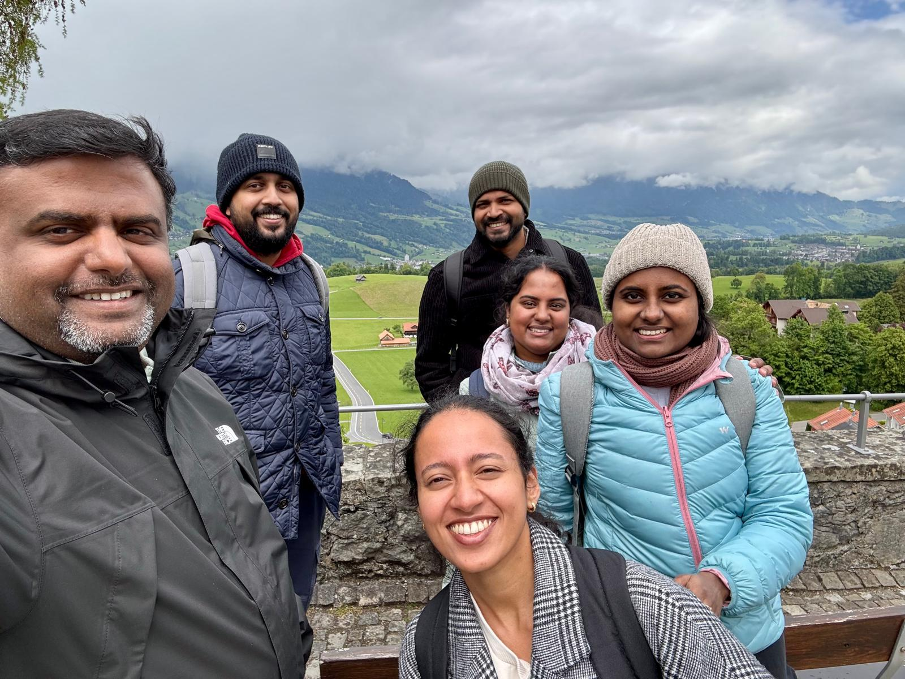
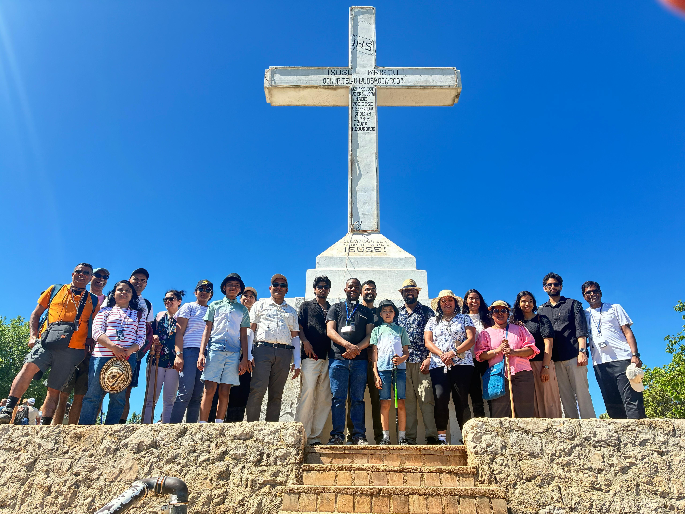
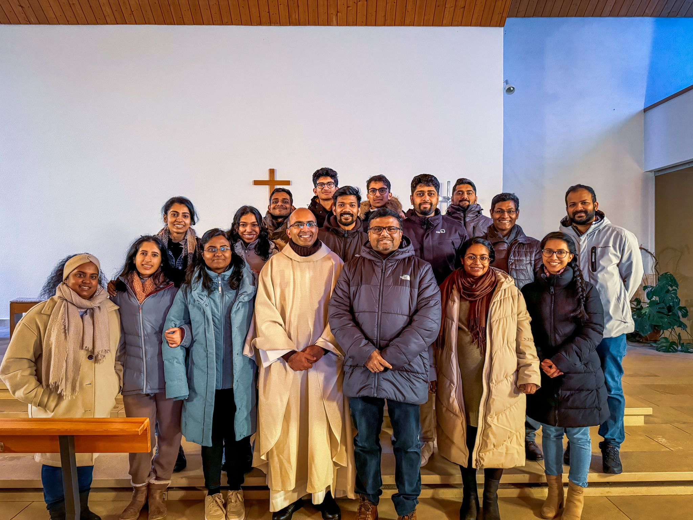
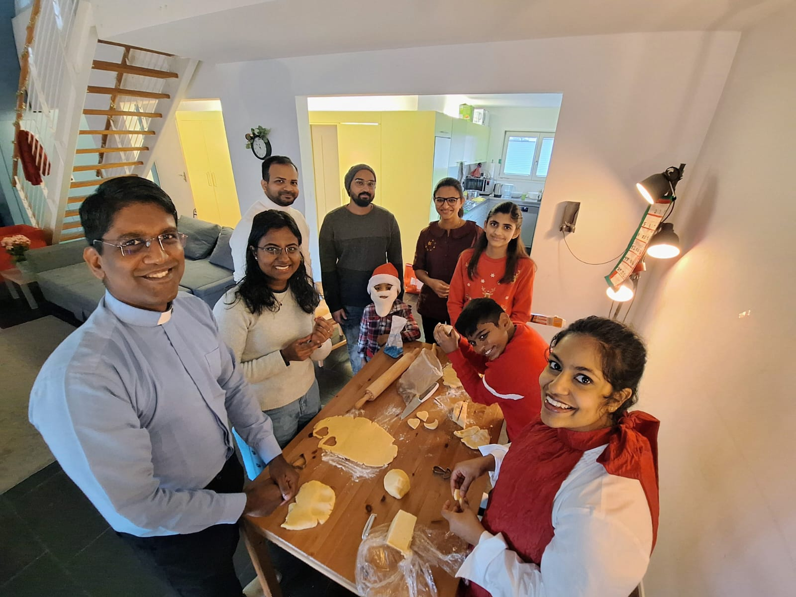
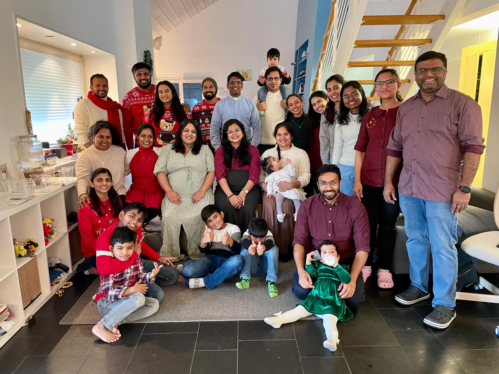
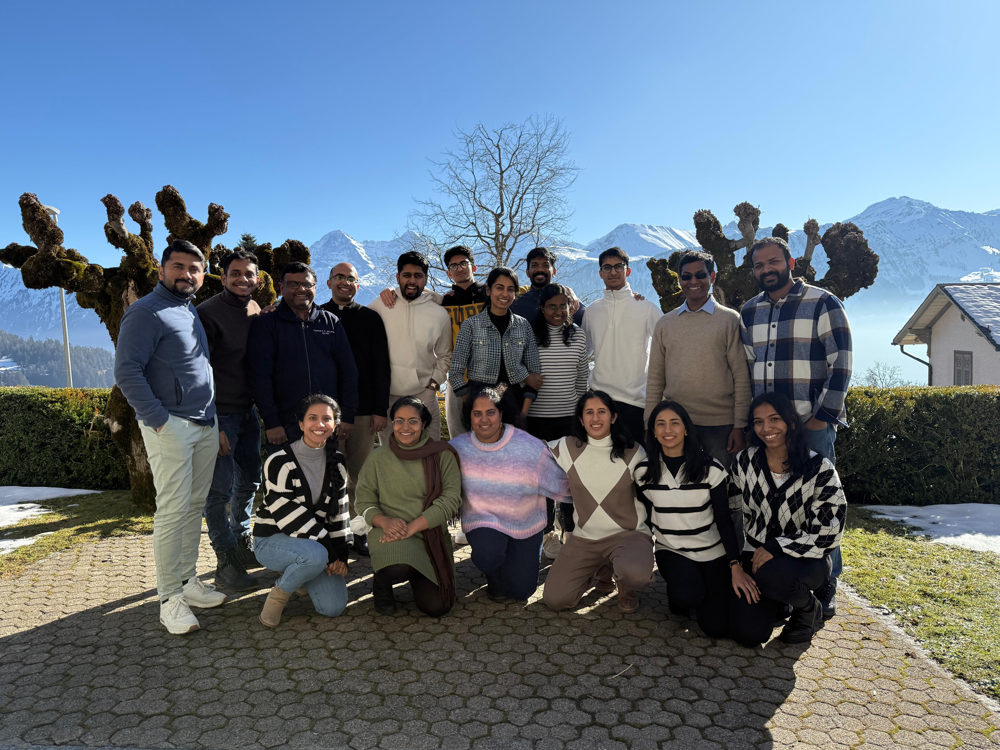
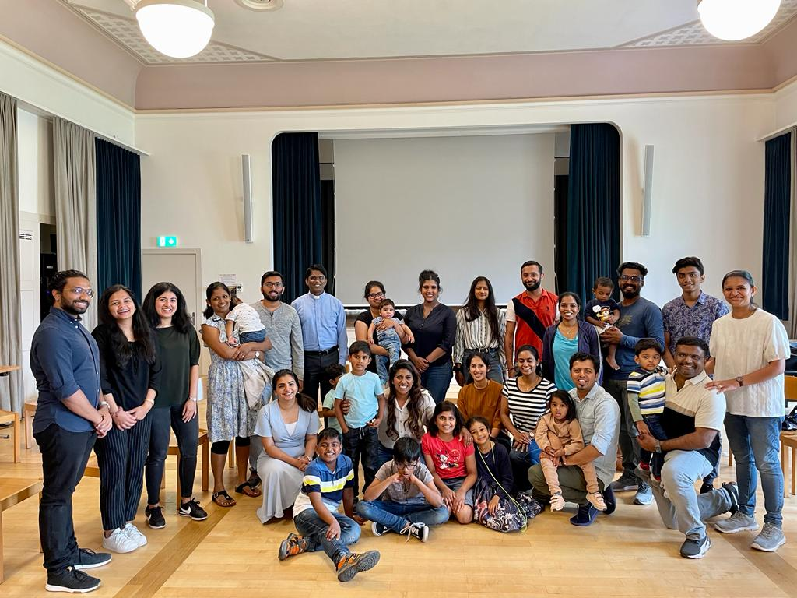
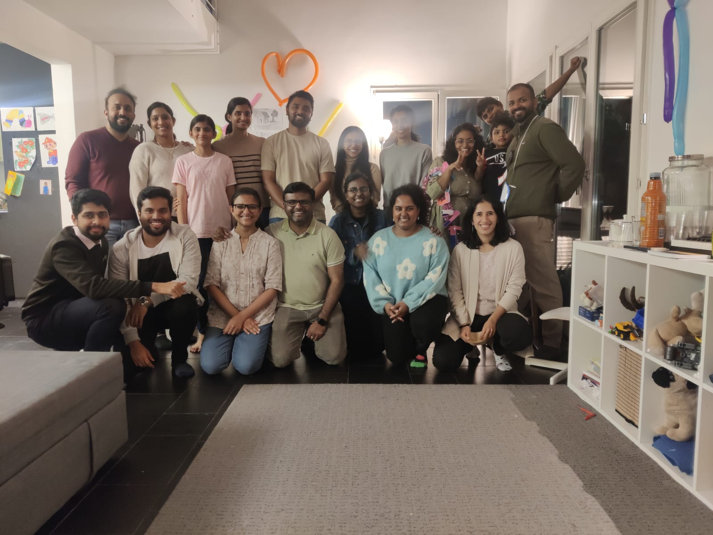

Jesus Youth verbindet junge Christen in der Schweiz durch Gebet, echte Gemeinschaft und aktive Mission — für ein Leben voller Tiefe, Freude und Begeisterung.
Unterstützt von & in Zusammenarbeit mit
Viele Jugendliche suchen nicht einfach Unterhaltung —
sie suchen echte Verbindung, tiefe Freundschaft
und einen Sinn im Leben.
Seit Jahren verbinden wir junge Christen in der Schweiz durch authentische Gemeinschaft, kraftvolles Gebet und aktive Mission. Jesus Youth ist keine Organisation — es ist eine Begegnung mit Gott und mit Menschen, die denselben Weg gehen.
Unsere Gemeinschaft ist offen für alle, die Gott suchen — unabhängig davon, wo sie in ihrem Glaubensleben stehen. Kein Druck. Kein Urteil. Nur Offenheit.
Lern uns kennen →Vier Säulen, die unsere Gemeinschaft tragen und prägen.
Gemeinsames Gebet, Anbetung und Stille als Herzstück unserer Gemeinschaft. Wir wachsen im Glauben durch Gebetstreffen, Exerzitien und persönliche Stille.
Echte Verbindungen entstehen in unseren Kleingruppen, Treffen und gemeinsamen Erlebnissen. Freundschaften, die ein Leben lang tragen.
Wir teilen unseren Glauben mit anderen — mutig und authentisch. Durch Outreach, Zeugnis und kreativen Einsatz mitten in unserer Gesellschaft.
Glaube kann feiern! Durch Lobpreis, Kunst und kreative Ausdrucksformen geben wir unserem Glauben Gestalt und Stimme — lebendig und begeistert.
Erlebe Jesus Youth hautnah — bei unvergesslichen Events, die verbinden und bewegen.
Wir laden Sie herzlich ein, an diesem wunderschönen Tag der Begegnung, des Gottesdienstes, der Erneuerung und der Gemeinschaft teilzunehmen.
Ein Abend voller Lobpreis, Gebet und Spiele. Offen für alle, die sich nach mehr sehnen – egal, wo Sie im Leben stehen.
Verbinden Sie Ihr Gebet und Ihre Gemeinschaft mit einem entspannten Grillabend und lassen Sie den Tag gemeinsam mit einem positiven Erlebnis ausklingen.
Bilder, die unsere Gemeinschaft zum Leben erwecken.










Einfach anfangen — wir begleiten dich auf dem Weg.
Schreib uns eine Nachricht oder komm einfach zu einem unserer offenen Events. Kein Druck, keine Verpflichtung — nur eine ehrliche Begegnung.
Du wirst zu einem Willkommensabend eingeladen, wo du das Team kennenlernst und die Gemeinschaft erlebst — entspannt und unkompliziert.
Du wirst in eine Kleingruppe eingeführt und nimmst an Treffen, Praise Nights und Veranstaltungen teil. Gemeinschaft wächst durch Erfahrung.
Bringe deine Gaben und Talente ein — als Teil des Teams, als Lobpreismitglied, als Mitorganisator oder in der Mission. Du gehörst dazu.
„Jesus Youth hat meinen Glauben aus einer trockenen Pflicht in eine lebendige Beziehung verwandelt. Ich hätte nie gedacht, dass Gemeinschaft so viel Kraft geben kann."
„Hier habe ich Menschen gefunden, die mein Leben wirklich kennen — mit allem. Freundschaften, die ehrlich sind und tragen. Das ist Jesus Youth für mich."
„Das JY Weekend war ein Wendepunkt in meinem Leben. Ich kam als Skeptiker und ging als jemand, der wieder an die Kraft des Gebets glaubt."
„Die Praise Night jeden Monat ist für mich wie ein Atemzug frischer Luft. Dort kann ich ganz ich selbst sein — mit allen Fragen und allem Staunen."
„Was mich an Jesus Youth fasziniert: Niemand muss perfekt sein. Alle suchen, alle wachsen — und das gemeinsam. Das macht den Unterschied."
„Ich war lange auf der Suche. Jesus Youth hat mir gezeigt, dass Glaube nicht langweilig ist — er ist das aufregendste Abenteuer, das ich kenne."
Jesus Youth ist eine internationale katholische Jugendbewegung, die 1972 in Kerala, Indien entstanden ist und heute in über 60 Ländern aktiv ist. In der Schweiz verbindet sie junge Christen im Alter von 16 bis 35 Jahren durch Gebet, Gemeinschaft und Mission. Wir sind eine charismatische Bewegung innerhalb der katholischen Kirche — lebendig, offen und voller Begeisterung für den Glauben.
Nein! Jesus Youth ist offen für jeden, der sich für Glaube und Gemeinschaft interessiert — egal wo du in deinem Glaubensleben stehst. Ob du gerade erst anfängst, Fragen hast oder schon lange glaubst: Du bist willkommen. Niemand erwartet Perfektion, nur Offenheit.
Jesus Youth richtet sich primär an junge Erwachsene zwischen 16 und 35 Jahren. Wir sind offen für alle, die unsere Werte teilen — unabhängig von Herkunft oder Hintergrund. Familien und ältere Geschwister sind bei besonderen Veranstaltungen ebenfalls herzlich willkommen.
Ganz einfach: Komm zu einer unserer offenen Veranstaltungen — zum Beispiel zur Praise Night — oder schreib uns direkt. Wir laden dich dann zu unserem nächsten Willkommensabend ein und begleiten dich in die Gemeinschaft. Kein Antrag, keine Verpflichtung, keine Kosten.
Es gibt keine formelle Mitgliedschaft mit Beitrag. Du bist Teil der Gemeinschaft, wenn du Teil der Gemeinschaft bist. Für spezifische Events können Teilnahmegebühren anfallen, die wir immer so niedrig wie möglich halten. Niemand soll wegen Geld ausgeschlossen werden.
Wir bieten ein breites Spektrum: monatliche Praise Nights, wöchentliche Kleingruppen, Bibelstudium, das jährliche JY Weekend, das Sommerlager, Tagesausflüge, soziale Projekte und vieles mehr. Unser Kalender ist gefüllt — und wir freuen uns auf dich dabei!
Beginne noch heute deine Reise mit Jesus Youth — wir freuen uns auf dich.